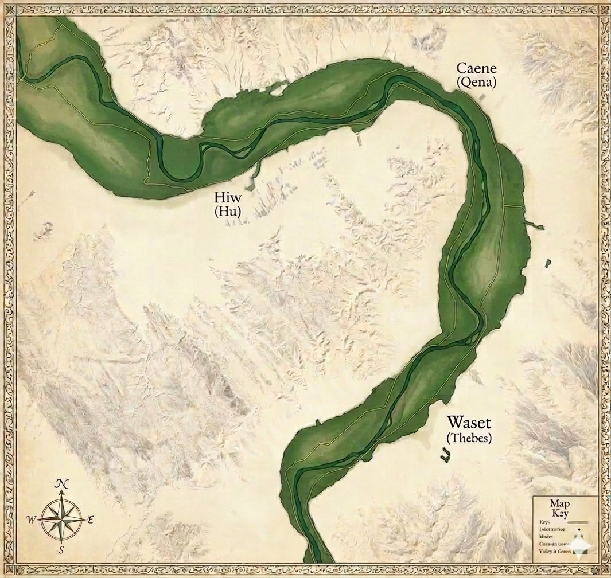

Chapter I: Trav'ling Thebes-Farshût Line
{{ chapters.sent-1 }} Although J was the last letter added to the English alphabet, this digital anthology begins almost four thousand years ago on a trade route accross the Theban Plateau during Egypt's Late Middle Kingdom.
{{ chapters.sent-2 }} During this time, Egypt was in the middle of it's second golden age, a period renowned for it's literature and the expansion of trade.


Chapter III: the Encampment
Carved into the soft limestone cliffs, by Semites some 4000 years ago (during the Middle Kingdom period, 2040-1674 BC), it is here, in Egypt's western desert, that we find the first signs of an alphabetic writing system. Read more →
Scene {{ scene.scene_number }}: {{ scene.title }}
{{ scene.excerpt }} Read more →